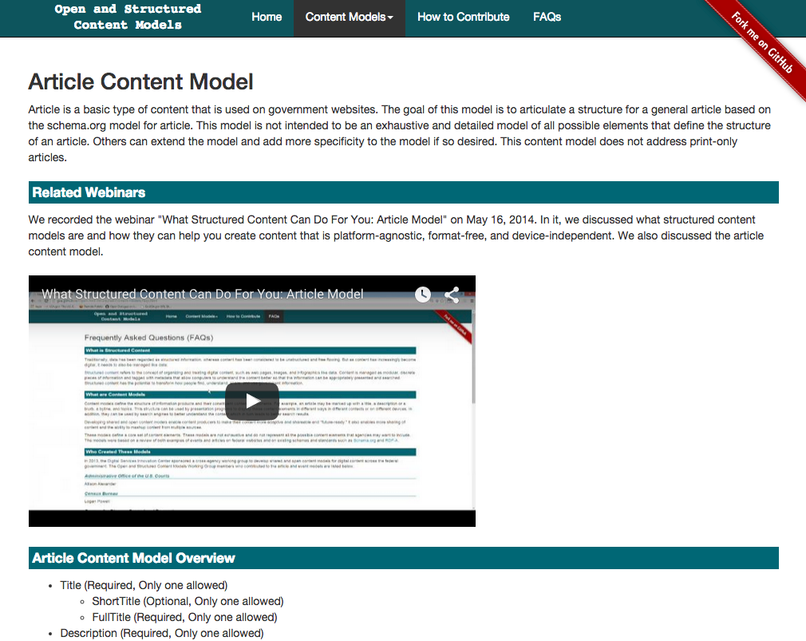
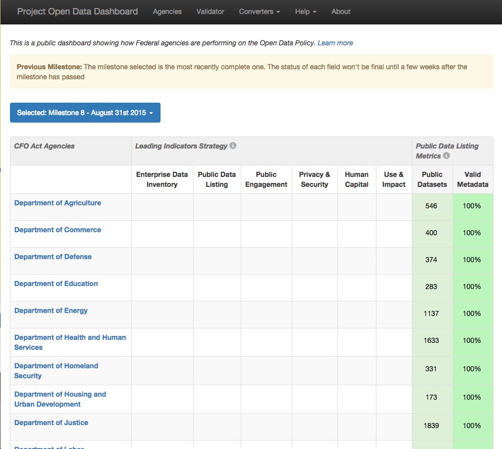
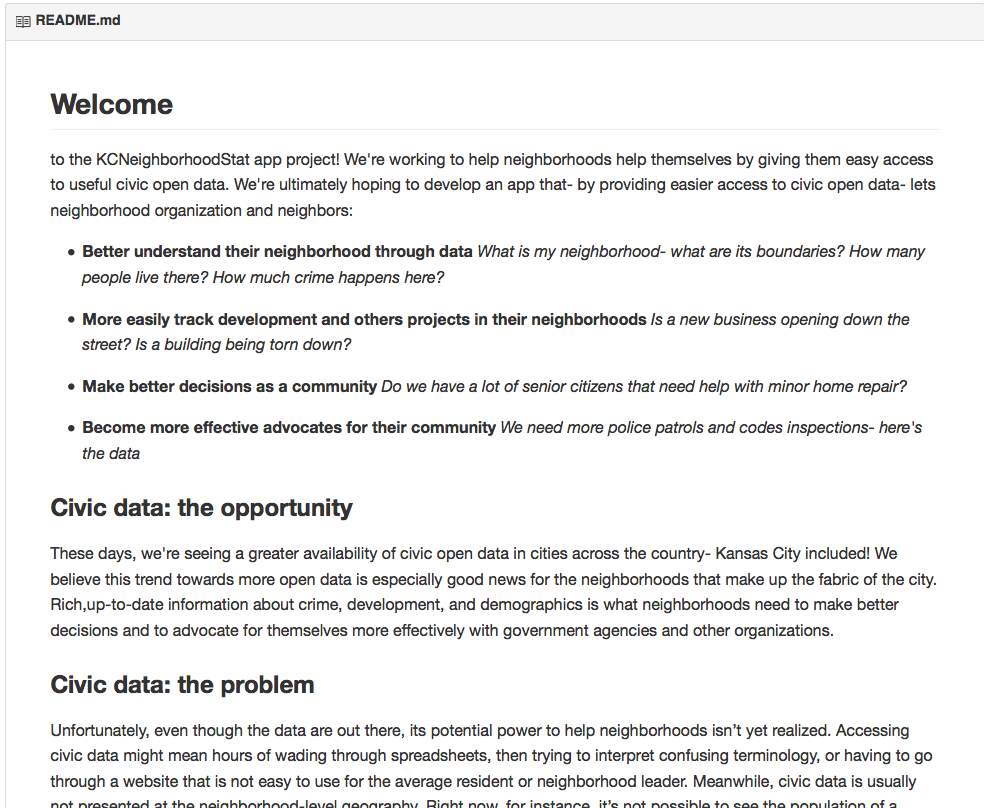
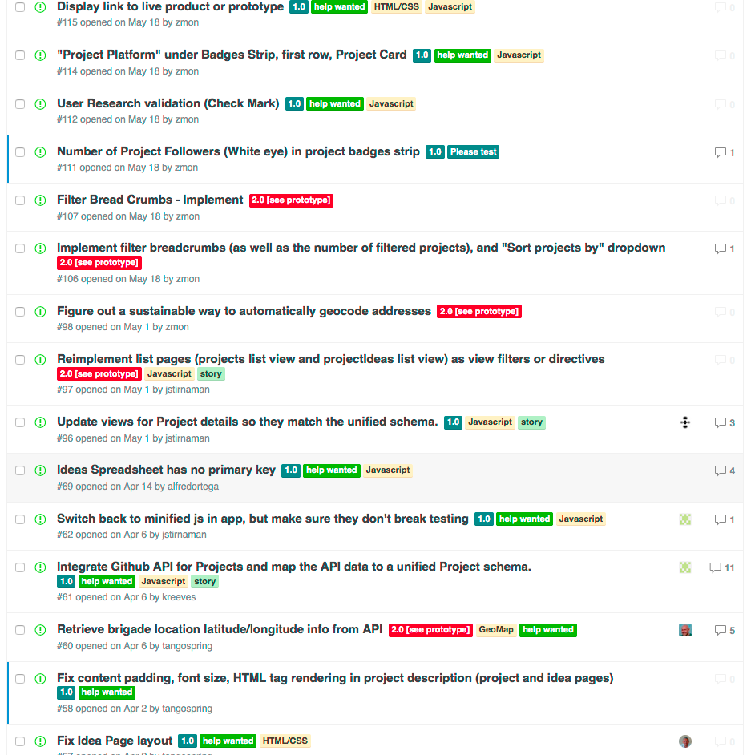
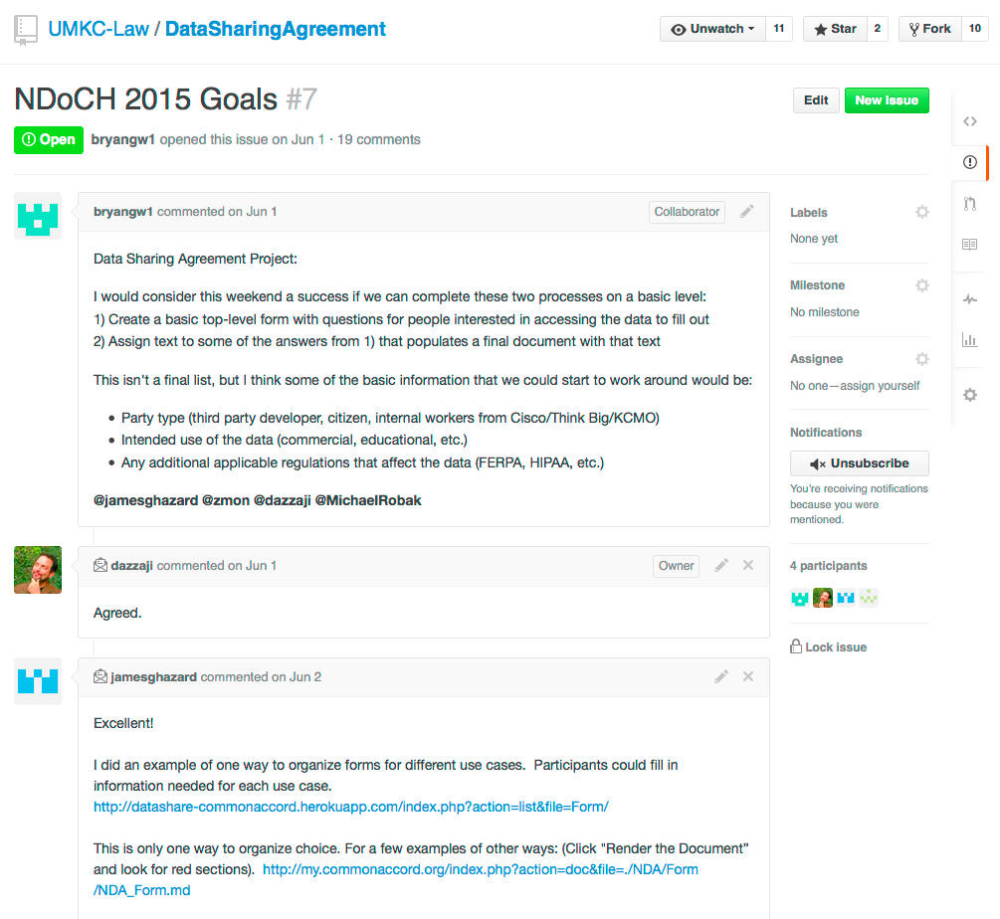
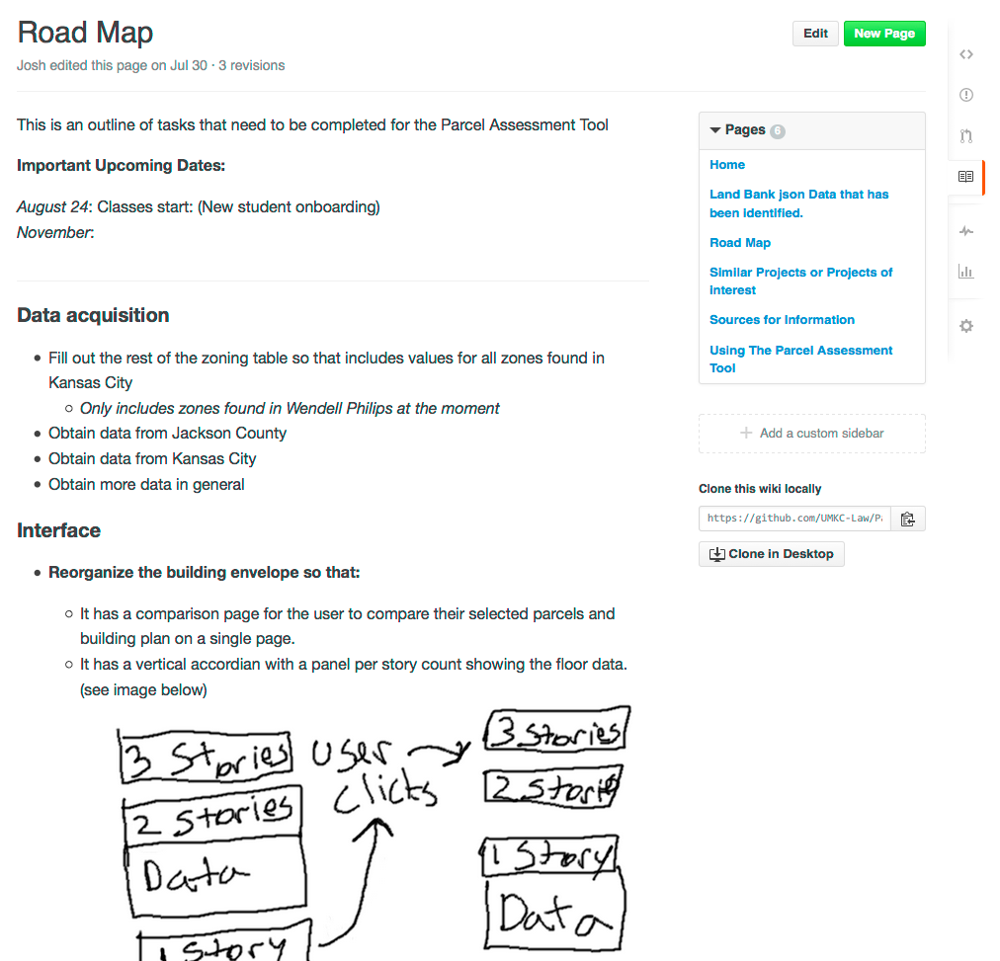
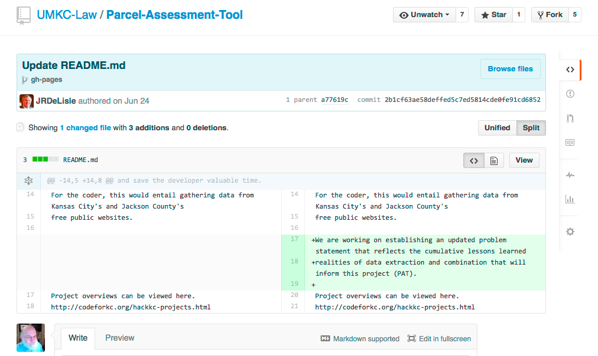
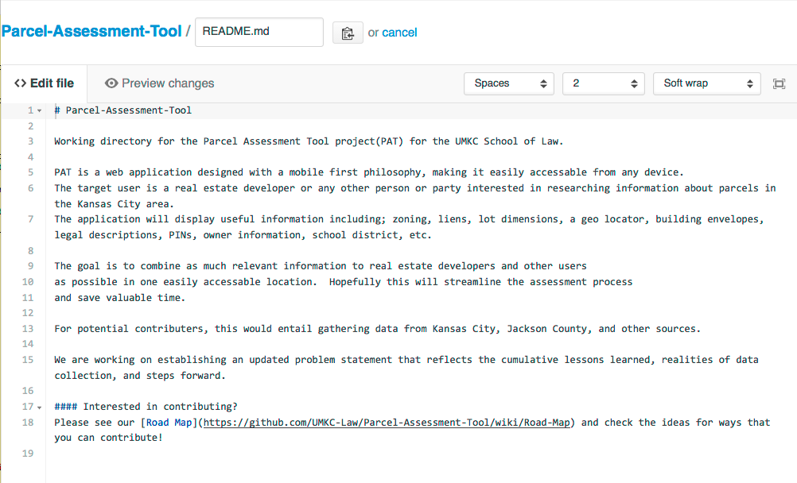
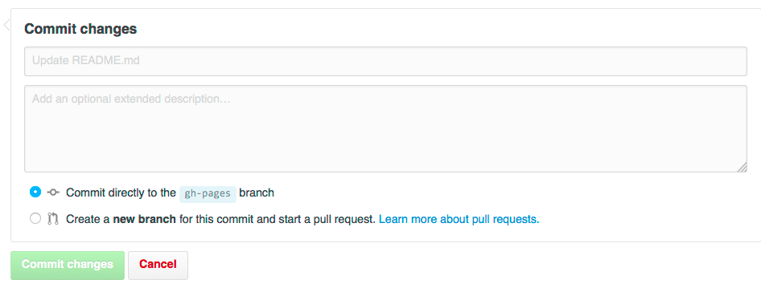

name: inverse layout: true class: center, middle, inverse --- #GitHub .footnote[Go directly to [project site](https://github.com/zmon/legal-git-hub)] --- ## What is it, what can I do with it, and why should I be using it? --- layout: false .left-column[ ## Why ] .right-column[ GitHub allows you to: - Share/Publish - This presentation is a GitHub document - Collaborate - Communicate Examples: - [http://gsa.github.io/Open-And-Structured-Content-Models/index.html](http://gsa.github.io/Open-And-Structured-Content-Models/index.html) - [http://labs.data.gov/dashboard/offices](http://labs.data.gov/dashboard/offices) - [https://github.com/GSA/open-data-program-template](https://github.com/GSA/open-data-program-template) ] ---  ---  --- .left-column[ ## Why ## What ] .right-column[ Git + Hub, two words, CamelCased - Git is a Version Control System - Allows you to track changes and versions - Hub is the social aspect - README.md - Issues - with labels - Wiki - for persistent backgound - Collaborators/team - easy access ] --- .left-column[ ## Why ## What ### Git = Versions ] .right-column[ - Branch - Final/master - Draft/develop - Tags - iOS 5.0, 6.0, 7.0 - Presented-2-Sep-2015 ] --- .left-column[ ## Why ## What ## Social (Hub) ] .right-column[ There are three major social aspects that the Hub has: - To easily see what the project is about [README.md](https://gist.github.com/susanBuck/d5173196babd1cedfd06) a [better](https://github.com/codeforamerica/CutePets/blob/master/README.md) example - The ability to suggest and converse about improvements, [issues](https://github.com/UMKC-Law/DataSharingAgreement/issues/7) - A place to talk about and document a project [Wiki](https://github.com/h5bp/html5-boilerplate/wiki) ] --- ### https://github.com/codeforamerica/howto/blob/master/Good-READMEs.md  ---  ---  ---  --- .left-column[ ## Why ## What ## Social (Hub) ## Social (Git) ] .right-column[ Collaborative: - See each other's work - Know when changes are made, **Follow** - See changes made to the work - Politely suggest changes - **Fork** a copy - **Edit** your copy - **Commit** your changes to your copy - **Pull Request**, ask for your changes to be included ] --- ### Changes  --- ### Edit  --- ### Commit  ### Pull Request --- ## Create your account * Goto http://github.com * Click Sign Up, in the upper right hand corner * Choose the free plan --- ## Lets follow a GitHub Project .left-column[ ## Create Account ## Follow ] .right-column[ We are all going follow this semesters class - Browse over to [https://github.com/UMKC-Law](https://github.com/UMKC-Law) - Search for fall-2015 - Click the name - Click the **Watch** pulldown and change to Watching ] --- ### Lets make a suggestion .left-column[ ## Create Account ## Follow ## Issue ] .right-column[ We will create an issue suggesting that we edit the readme using: ## MarkDown Instead of HTML ```html <h1>List of items</h1> <ol> <li>This is item one</li> <li>This is item two</li> </ol> ``` MarkDown ```html List of Items ------------- * This is item one * This is item two ``` ] --- ## Lets politely make a change .left-column[ ## Create Account ## Follow ## Issue ## Fork ] .right-column[ We are all going to suggest a change: - We are going to add our names to [http://codeforkc.org/meeting-notes/coders.html](http://codeforkc.org/meeting-notes/coders.html) - Follow the instructions at [http://goo.gl/tVYEBZ](http://goo.gl/tVYEBZ) - Fork the KC Brigade Website - View your fork in a browser - Add your name to the list of coders - Commit your changes - Issue a Pull Request ] --- .left-column[ ## Edit ## Create a Repository ] .right-column[ Create a repository in GitHub: 1. Click on your name in the upper right hand corner 2. Select "Your Profile" 2. Click on Repositories in the middle of the tabs 3. Click New green button 4. Fill in: * Repository name * Description * Public * Intialize this repository with a README * Add a MIT License ] --- .left-column[ ## Edit ## Create a Repository ## Issues ## README.md ] .right-column[ Some resources: - [Markdown Basics](https://help.github.com/articles/markdown-basics/) https://help.github.com/articles/markdown-basics/ - [Mastering Markdown](https://guides.github.com/features/mastering-markdown/) https://guides.github.com/features/mastering-markdown - Deep dive [Mastering Issues](https://guides.github.com/features/issues/) ] --- .left-column[ ## Edit ## Create a Repository ## Issues ## README.md ] .right-column[ What a README should do and be: * Use it to orient people to your project. * It should be simple and short. * Could contain: * A clear descripition of the project * how and why you would use it * list of authors * instructions on how to contribute, fork/pull, issues * intructions on use and/or install ] --- name: last-page template: inverse ## That's all folks (for now)! Slideshow created using [remark](http://github.com/gnab/remark).